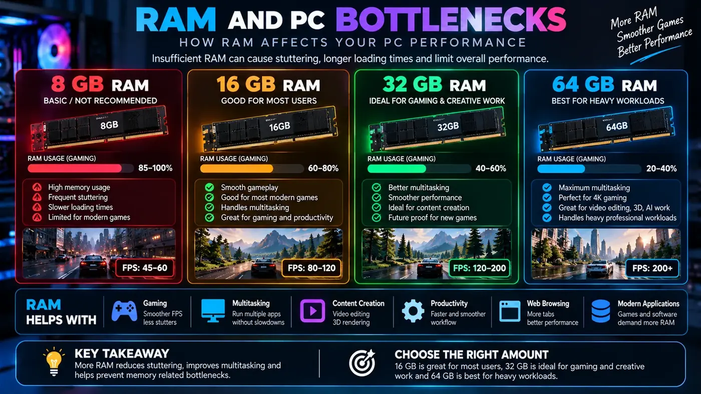

How RAM Affects Gaming Performance and PC Bottlenecks
Understanding how much memory you actually need, why RAM speed matters, and how to tell if a lack of system memory is the real reason your games are stuttering.
The Quick Answer
System memory (RAM) acts as the high-speed workspace for your CPU. When you launch a game, data is loaded from your slow storage drive (SSD/HDD) into the blazing-fast RAM so the processor can access it instantly.
A RAM capacity bottleneck occurs when you run out of this workspace. When RAM is full, Windows is forced to use your storage drive as "virtual memory." Because even the fastest NVMe SSD is exponentially slower than RAM, your game will freeze, hitch, and stutter wildly as it waits for data.
However, once you have enough capacity, adding more RAM will not magically increase your average FPS. Going from 16GB to 32GB only improves performance if your specific games and background apps were previously exceeding 16GB of usage.

RAM Capacity: 8GB vs 16GB vs 32GB vs 64GB
Choosing the right capacity is about meeting the requirements of your specific workload without overspending.
8GB: The Danger Zone
In the modern era, 8GB of RAM is not enough for a dedicated gaming PC. Windows 11 alone can consume 3-4GB just idling on the desktop. Launching a modern game with only 4GB of usable memory left will result in severe stuttering, long load times, and frequent crashing.
16GB: The Minimum Standard
16GB is currently the baseline for gaming. It provides enough overhead for Windows, a few background applications (like Discord or a lightweight browser tab), and almost all current esports and mainstream titles. If you are on a strict budget, start here.
32GB: The New Recommended Sweet Spot
As modern AAA games become more complex (especially expansive open-world titles and heavy simulations like Microsoft Flight Simulator or heavily modded games), memory requirements are creeping up. 32GB provides absolute peace of mind. It allows you to play the heaviest games while seamlessly multitasking (leaving dozens of Chrome tabs open, running streaming software, or watching a video on a second monitor) without ever hitting a capacity bottleneck.
64GB and Beyond: Overkill for Pure Gaming
If your PC is strictly for gaming, 64GB is a waste of money. You will not see a single extra frame per second compared to 32GB. However, if your PC doubles as a workstation for heavy 4K video editing, large-scale 3D rendering, or complex data analysis, 64GB or 128GB becomes highly beneficial.
Beyond Capacity: Speed and Bandwidth
Capacity prevents stuttering, but RAM speed (measured in MHz or MT/s) and latency (timings) can actually improve your raw frame rate, particularly in specific bottleneck scenarios.
DDR4 vs DDR5
We are currently in a transition period between DDR4 and the newer DDR5 standard. DDR5 offers significantly higher memory bandwidth, meaning it can move more data at once. While early DDR5 showed minimal gains over high-end DDR4, modern DDR5 kits (e.g., DDR5-6000) offer a noticeable uplift in CPU-heavy gaming scenarios.
How RAM Speed Interacts with CPU Bottlenecks
The impact of faster RAM is highly dependent on your current system balance:
- If you are GPU Bottlenecked (e.g., gaming at 4K): The graphics card is the limiting factor. The CPU is already waiting for the GPU, so feeding the CPU data faster with quicker RAM will make almost zero difference to your FPS.
- If you are CPU Bottlenecked (e.g., esports gaming at 1080p): The processor is the limiting factor. In this scenario, supplying data to the CPU faster via high-speed, low-latency RAM can noticeably improve performance. You might see higher average FPS, but more importantly, you will see vastly improved 1% lows and frame-time consistency.
The Golden Rule: Dual-Channel Memory
Regardless of capacity or speed, the single most important rule of PC memory is to use a dual-channel configuration. This means installing two identical sticks of RAM rather than one large stick.
Think of single-channel memory as a one-lane highway between your RAM and CPU. Dual-channel memory opens up a second lane, literally doubling the theoretical memory bandwidth.
Running a gaming PC in single-channel mode is one of the most common and devastating mistakes new builders make. It will artificially create a severe CPU bottleneck, sometimes cutting your potential FPS in half and causing horrendous stuttering.
Note: Always refer to your motherboard manual to ensure you are installing your two sticks in the correct slots (usually slots 2 and 4, counting away from the CPU) to enable dual-channel mode.
Average FPS vs Frame-Time Consistency
When discussing RAM upgrades, many people focus entirely on the average FPS number. This is a mistake. The real benefit of adequate RAM capacity and optimal speed is felt in frame-time consistency and 1% lows.
- Average FPS: The total number of frames rendered in a second.
- Frame Time: The exact amount of time (in milliseconds) it takes to render a single frame.
- 1% Lows: The average frame rate of the slowest 1% of frames during a test.
You can have an average FPS of 100, but if the frame time spikes wildly every few seconds (meaning some frames take much longer to render than others), the game will feel choppy and unresponsive. Having sufficient, dual-channel RAM ensures that the CPU always has the data it needs precisely when it needs it, eliminating those micro-stutters and drastically raising those 1% lows for a smoother experience.
How to Diagnose a RAM Bottleneck
Do not guess if you need more RAM; measure it.
- Use a monitoring tool like MSI Afterburner, HWiNFO64, or the Windows Task Manager.
- Play your most demanding game in the way you normally play (with your usual background apps running).
- Monitor your "System RAM Usage" or "Commit Charge."
- If your physical RAM usage is consistently hovering near your maximum capacity (e.g., 15GB used out of 16GB), and you are experiencing severe, sudden stutters during gameplay (especially when turning around or moving into new areas), you have a RAM capacity bottleneck.
If your RAM usage is only at 10GB out of 16GB, upgrading to 32GB will not fix your performance issues. You should instead look into fixing a CPU or GPU bottleneck.
Conclusion
RAM is the unsung hero of a smooth gaming experience. While it doesn't render graphics like a GPU or process complex logic like a CPU, a lack of RAM will bring a high-end system to its knees.
Ensure you have enough capacity for your workload (16GB minimum, 32GB recommended), always run your memory in dual-channel mode, and enable your XMP/EXPO profile in the BIOS so you actually get the speeds you paid for. If you have those basics covered, your RAM is likely not your bottleneck.
Frequently Asked Questions
Can more RAM fix a CPU bottleneck?
No. If your CPU is fundamentally too slow to process game logic, adding more RAM will not make the CPU faster. However, if you are currently running out of RAM, adding more will fix the severe stuttering associated with memory swapping.
Does 32GB always give more FPS than 16GB?
No. If a game and your background applications only use 12GB of RAM in total, upgrading from 16GB to 32GB will provide exactly zero additional FPS. You only gain performance when you are actively running out of capacity.
Why is dual-channel memory important?
Dual-channel memory doubles the bandwidth between your RAM and your CPU. If you only use one stick of RAM (single-channel), you choke the CPU's ability to receive data, which can drastically lower your FPS and cause stuttering, especially in CPU-heavy games.
How do I know if RAM is my bottleneck?
Monitor your system usage while gaming. If your RAM usage is consistently at 90-100%, and you experience massive, sudden stutters (especially when loading new areas or turning the camera quickly), you are likely experiencing a RAM capacity bottleneck.
Does faster RAM speed increase FPS?
Yes, but with diminishing returns. Upgrading from very slow DDR4 to fast DDR4 (or DDR5 to faster DDR5) can improve your 1% lows and frame-time consistency, especially if you are in a CPU bottleneck scenario. If you are GPU bottlenecked, faster RAM makes very little difference.